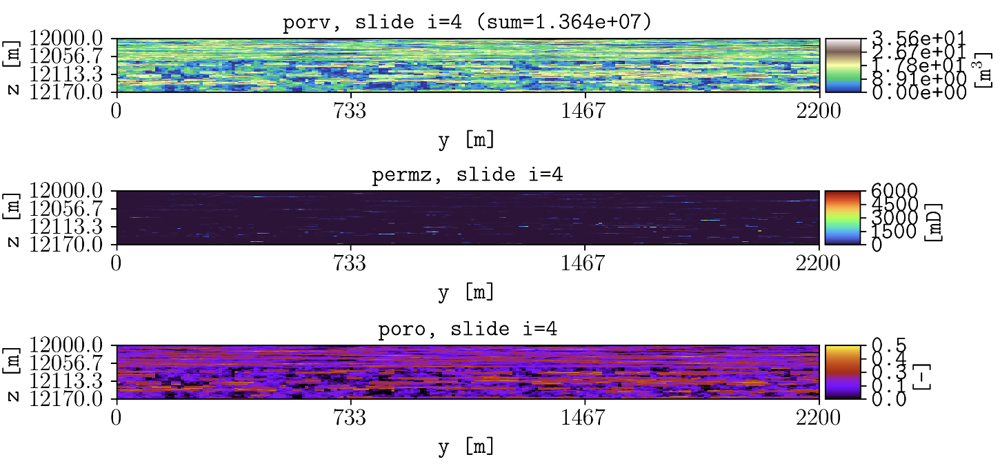

Examples
SPE11B
These files, located in the examples folder, were generated using pyopmspe11 by running this configuration file. Then, if you succeed in installing plopm, inside the examples folder by typing in the terminal
plopm
the following figure should be generated (this example is used in the tests, then it runs with the default terminal argument options).
The default argument options are:
plopm -i SPE11B -o output -s ,,0 -f 14 -x '' -y ''
See the Overview or run plopm -h for the definition of the argument options.
Norne
This example relies on the input deck NORNE_ATW2013.DATA and the simulation results in opm-tests. Then, if you download the files in that folder and add the input deck in the same folder, then by using the plopm tool:
plopm -i NORNE_ATW2013 -o . -s ,,0 -x 455600,462200 -y 7319500,7327100
these are onee of the generated figures:

Here, we plot the top view (xy axis, k=1), and we set the xlim (-x) and ylim (-y) in order to reduce the white space outside the active cells.
Generic deck
See/run the test_generic_deck.py for an example where plopm is used to generate figures from the SPE10_MODEL2 model by downloading the files and using the OPM Flow simulator.
